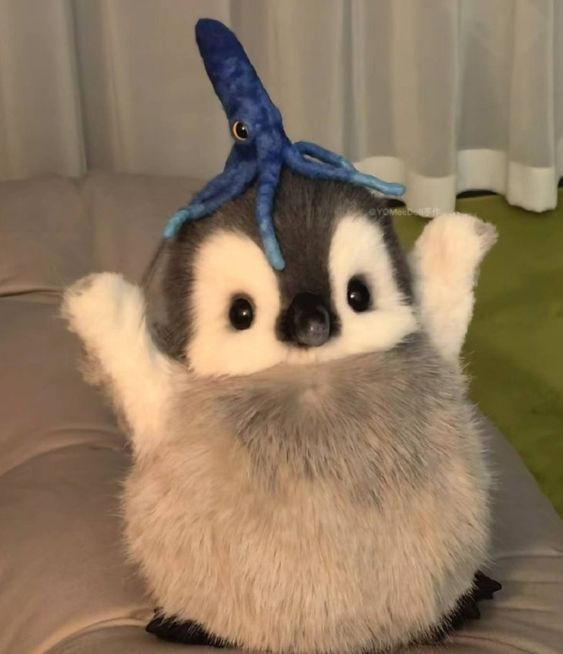
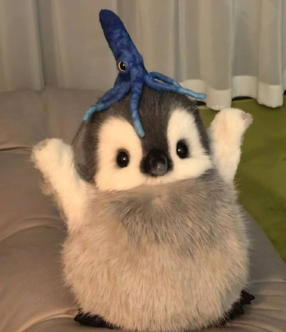

Esta especie de oso aunque parezca que bebió de la fuente de la juventud porque siempre luce joven y rozagante, es de hecho, una criatura realmente ancestral que ha habitado nuestro planeta desde hace más de 2 millones de años. Sin embargo y lamentablemente, su población a disminuido de forma drástica en las últimas décadas, hasta el punto de quedar sólo 1000 ejemplares en todo el mundo.
El ajolote mexicano es un anfibio que está relacionado con antiguos mitos mexicas. Su nombre en náhuatl (axólotl) quiere decir “xólotl de agua” y se ha traducido como “juguete de agua”, “monstruo acuático”, “gemelo de agua” o “perro de agua”. Actualmente aún habita exclusivamente en el imperio antiguo del Valle de México. Este “monstruo” es tímido y siempre busca lugares para esconderse.
Un poco de historia de los gatos Sabemos que la familia de los gatos se ha desarrollado y se ha diversificado desde hace muchos años atrás. Los felinos son muy fáciles de distinguir por sus cualidades, características e incluso por sus hábitos. Además, son los únicos animales que han decidido domesticarse por sí solos. Los años de los gatos En términos de desarrollo, el primer año de vida de un gato es igual a los primeros 15 años de una vida humana. Después de su segundo año, un gato tiene 25 años equivalentes al de un humano. Y después de los dos años, cada año de vida de un gato equivale a unos 7 años humanos. Adicionalmente, los gatos pueden vivir hasta un poco más que los 16 años. Lenguaje de los gatos Los gatos se comunican a través de vocalizaciones y entre ellas la más popular es el maullido. También, cabe mencionar que, junto con el perro, son los animales más populares para escoger como mascota, debido a su adaptabilidad y características.